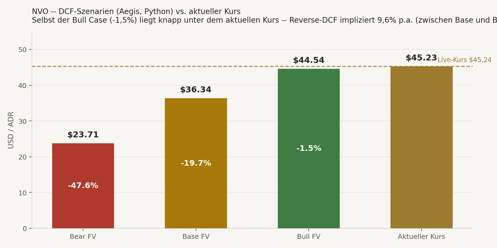
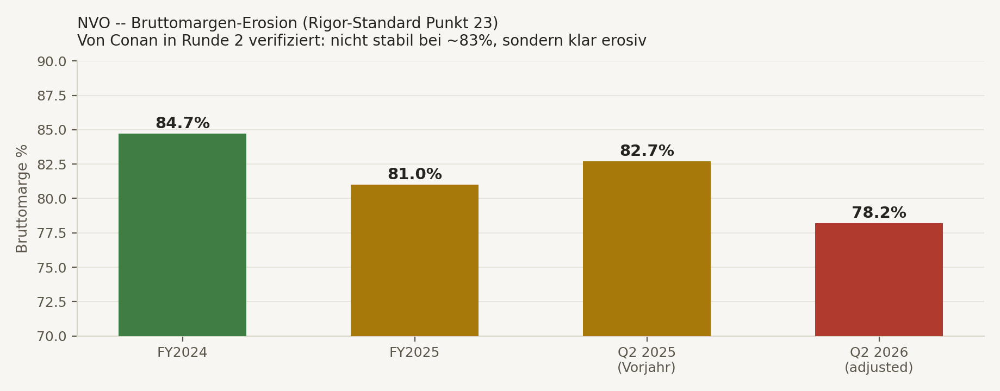
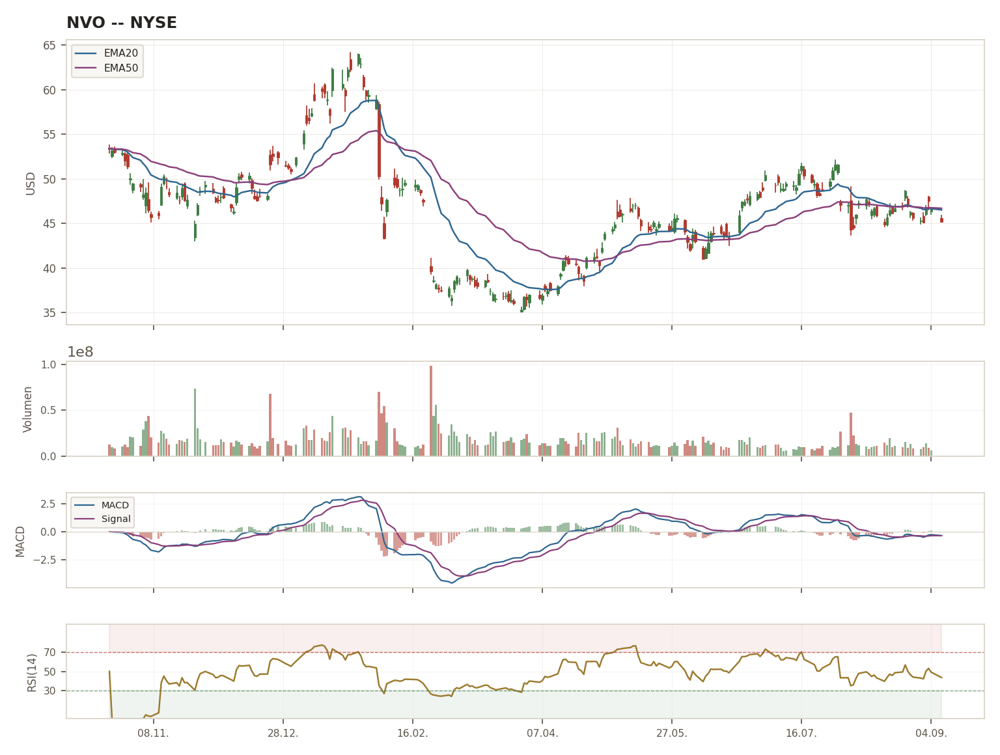
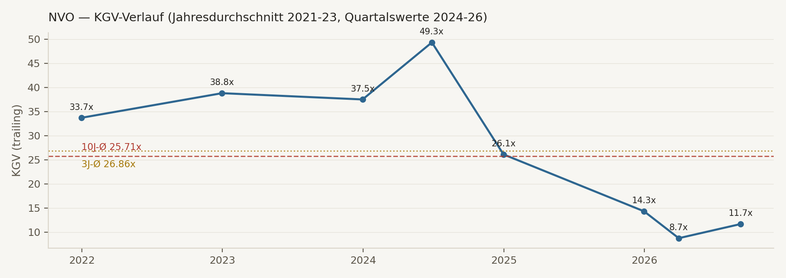

Der Aufstieg. Novo Nordisk war bis Mitte 2024 das wertvollste Unternehmen Europas — Marktkapitalisierung am Allzeithoch (Juni 2024) rund $635,7 Mrd., getragen von Ozempic und Wegovy, den beiden dominanten GLP-1-Präparaten gegen Diabetes und Adipositas. Zusammen mit Eli Lilly bildete Novo ein faktisches Duopol im margenstärksten Pharma-Wachstumssegment der letzten Dekade.
Der Fall. Seit dem ATH hat die Aktie ~69% ihres Wertes verloren — eine Kette von fünf separaten negativen Ereignissen binnen 18 Monaten: zwei enttäuschende CagriSema-Studien (März 2025, Februar 2026 — letztere verfehlte sogar die Nicht-Unterlegenheit gegenüber Lillys Tirzepatide), ein Guidance-Cut samt Sammelklagen wegen mutmaßlich beschönigter Compounding-Risiken (Juli 2025), ein CEO-Rücktritt (August 2025), und zuletzt ein gescheiterter Herz-/Nieren-Wirkstoff (Ziltivekimab, Juli 2026) — der die Diversifikations-Hoffnung jenseits von GLP-1 dämpft.
Die Gegenbewegung. Parallel dazu läuft eine dokumentierte, dreistufige Beat-and-Raise-Sequenz unter dem neuen CEO Mike Doustdar: die 2026er-Guidance wurde von ursprünglich -5% bis -13% (CER) über -4% bis -12% auf zuletzt 0% bis -6% angehoben — Q2 2026 übertraf den Analysten-Konsens deutlich. Das ist kein sterbendes Unternehmen, sondern ein Konzern im Reset.
Der Cross-Check-Befund. Jack (TMR) und Conan (Scout) kommen — trotz identischer Zusatzdaten in Runde 2 — zu spürbar unterschiedlichen Schlussfolgerungen (Details Seite 2). Das ist selbst der bemerkenswerteste Fund dieses Deep Dives: eine echte, unaufgelöste Meinungsverschiedenheit zwischen zwei unabhängigen Methoden, kein künstlicher Konsens.
BEOBACHTEN
Kein Kauf am aktuellen Kurs · CMD 21.09. als Schlüssel-Trigger · Zone $35-38
SELL (Runde 2)
Score 6→3/10 nach Margen-Fund · Konfidenz Hoch
WATCHLIST_PLUS
Leicht konstruktiver trotz gleicher Daten · Zone $35-38
Beiden KIs wurde in Runde 2 derselbe Fund vorgelegt: Novos Bruttomarge ist nicht stabil bei ~83%, sondern erosiv — FY2025 nur noch 81,0%, Q2-2026-adjusted sogar nur 78,2% (von 82,7% im Vorjahresquartal). Jack wertete das als "Game-Changer" und stufte sein Rating von HOLD (6/10) auf SELL (3/10) herab. Conan wertete denselben Fund als bereits bekanntes, teilweise erklärbares Risiko (Preisdruck, Einmalkosten für Kapazitäts-Right-Sizing, FX) und blieb bei WATCHLIST, sogar mit leicht positiverer Tendenz wegen der verifizierten Guidance-Erholung. Keine der beiden Reaktionen ist "falsch" — sie spiegeln unterschiedliche Methodik-Philosophien: Jack reagiert hart auf harte Finanzkennzahlen-Verschlechterungen (SCHRITT-4-Pflicht), Conan gewichtet den Gesamttrend (Guidance-Erholung, Kapitalrückführung, Katalysator-Nähe) stärker. Aegis' eigene Einordnung: der Fund ist real und ernst zu nehmen, aber teilweise durch nicht-strukturelle Einmaleffekte erklärt — Jacks Reaktion ist ein legitimes, hartes Warnsignal, aber der Capital Markets Day am 21.09. (in 2 Wochen) sollte abgewartet werden, bevor man sich hier definitiv festlegt.
Jack bewertete NVO mit Standard-K-BASIS=5 und vergab am Ende einen Agent Score von 6/10 (Runde 1, HOLD) bzw. 3/10 (Runde 2, SELL, nach Einpreisung der Margen-Erosion). Eigener Text-DCF (Runde 1, konservativerer Wachstumspfad als Aegis): Fair Value $30,39 (-32,8% vs. Kurs) — noch VOR der Margen-Korrektur, würde mit erosiver Marge weiter sinken. Moat-Einschätzung: stark, aber "von Dominanz-Moat zu umkämpftem Qualitäts-Moat" (Formulierung, die Conan unabhängig fast wortgleich verwendete — starkes Konvergenz-Signal für DIESEN Punkt, auch wenn das Rating selbst divergiert).
| Kriterium | Typ | Schwelle | Ist-Wert | Tag | Status |
|---|---|---|---|---|---|
| ROIC | K | >20% | ~40% (TTM) | T | ✅ Erfüllt |
| FCF-Marge (real) | K | ≥20% | 19,1% ($8,93 Mrd. / $46,79 Mrd.) | V | ❌ Knapp verfehlt |
| Op. Leverage | K | Ja/Nein | Fraglich — Op.-Ergebnis wuchs FY2025 langsamer (+3,9%) als Umsatz (+6,4%) | T | ⚠ Eher Nein |
| EPS-CAGR (5J) | K | ≥12% | ~20,7% | T | ✅ Erfüllt |
| Bruttomarge | E | ≥60% | 81,0% FY2025 (erosiv, Q2-2026-adj. nur 78,2% — siehe Seite 6) | V | ✅ Erfüllt, Trend ⚠ |
| Op. Margin | E | ≥20% | 41,3% FY2025 (korrigiert — nicht 37,23% oder 42,24%, beide falsch/veraltet) | V | ✅ Erfüllt |
| Revenue-CAGR (5J) | E | ≥8-10% | ~21,7% | V | ✅ Erfüllt |
| Net Debt/EBITDA | E | <2,0x | 0,57x (~$13 Mrd. / ~$22,7 Mrd.) | T | ✅ Erfüllt |
| Capex/Umsatz | E | ≤5% | 19,4% (DKK 60,1 Mrd. PP&E-Capex / DKK 309,1 Mrd. Umsatz — korrigiert, ohne Akero-Akquisitionskosten) | V | ❌ Deutlich verfehlt |
| CCC | E | <30 Tage | 264 Tage | T | ❌ Deutlich verfehlt |
| Beneish M-Score | OPT | <-1,78 | Nicht alle 8 Komponenten LIVE verfügbar | N | SKIP |
DNA-Urteil: K 2-3/4 (Op.-Leverage-Grenzfall) · E 4/6 (Capex-Intensität + CCC verfehlt). Kein sauberer 5/5- oder 0/5-Fall, sondern ein echtes Grenzfall-Bild — konsistent mit der Divergenz zwischen Jack (SELL) und Conan (WATCHLIST_PLUS) auf Seite 2: harte Gatekeeper-Kriterien sind gemischt erfüllt, nicht eindeutig gut oder schlecht.
Capex/Umsatz (19,4%, Schwelle 5%): Getrieben durch die aktive, mehrjährige Kapazitätserweiterung (Catalent-Werke, API-/Fill-Finish-Ausbau) — strukturell ähnlich der ⚡ CAPEX-AUSNAHME-Logik der Methodik (Investitions-Capex bei ROIC>WACC, nicht reine Ineffizienz). 2026er-Guidance sieht bereits einen Rückgang auf DKK 55 Mrd. vor. Kein Alarmsignal per se, aber auch keine stillschweigende Entschuldigung — die Investitionsintensität bleibt real und bindet Kapital.
CCC (264 Tage, Schwelle 30 Tage): Die 30-Tage-Schwelle ist für kapitalleichte Software-/Tech-Geschäftsmodelle kalibriert, nicht für globale Pharma-Distribution mit langen Payer-/Versicherer-Zahlungszyklen — ein CCC in dieser Größenordnung ist im Pharma-Sektor eher branchentypisch als ein NVO-spezifisches Alarmsignal. Trotzdem als hartes ❌ ausgewiesen statt stillschweigend als "nicht anwendbar" wegdiskutiert — echte Zahl, eigene Einordnung durch den Leser möglich.
| Jahr | Umsatz (DKK Mio.) | YoY-Wachstum | Kommentar |
|---|---|---|---|
| 2021 | 140.800 | — | Basisjahr |
| 2022 | 176.954 | +25,7% | Beginn GLP-1-Supercycle |
| 2023 | 232.261 | +31,3% | Wegovy-Hochlauf |
| 2024 | 290.403 | +25,0% | Höhepunkt, Kurs erreicht ATH Juni 2024 |
| 2025 | 309.064 | +6,4% | Deutliche Verlangsamung — erste Krisensignale |
5J-CAGR (2021→2025): ~21,7% p.a. — extrem hohes historisches Wachstum. 2026er-Guidance impliziert erstmals einen möglichen NOMINALEN Rückgang (0% bis -6% CER) — ein historisch beispielloser Bruch in der Wachstumstrajektorie für dieses Unternehmen.
| Datum | Guidance (Sales & Op.Profit, CER) | Richtung |
|---|---|---|
| 03.02.2026 (Initial, mit FY2025-Zahlen) | -5% bis -13% | 🔴 Erste Krisen-Guidance |
| 06.05.2026 (Q1-Update) | -4% bis -12% | 🟡 Leichte Anhebung |
| 04.08.2026 (Q2-Update) | 0% bis -6% | 🟢 Deutliche Anhebung |
Diese dokumentierte "Beat-and-Raise-aus-der-Krise"-Sequenz ist ein objektiv positives Managementglaubwürdigkeits-Signal für die aktuelle Führung unter CEO Doustdar (seit 07.08.2025) — auch wenn die ursprüngliche Kürzung (Juli 2025) noch unter dem Vorgänger Jørgensen erfolgte und Gegenstand laufender Sammelklagen ist (Details Seite 4).
| Dimension | Befund | Einordnung |
|---|---|---|
| Guidance-Treffsicherheit | Scharfe Kürzung Juli 2025 (alter CEO), dann 2 Anhebungen 2026 (neuer CEO) | 🟡 Trend verbessernd |
| Aktionärsrückgabe-Konsistenz | Dividende wachsend (9,40→11,40→11,70 DKK 2023-25), Buyback trotz Krise fortgesetzt (58% des 2026er-Programms bereits ausgeführt) | 🟢 Stark, auch in der Krise |
| Transparenz | Jeder Studien-Fehlschlag (CagriSema x2, Ziltivekimab) am selben Tag kommuniziert, keine verzögerte Offenlegung erkennbar | 🟢 Hoch |
| Selbstreflexion/Konsequenz | Board zog Konsequenz (CEO-Austausch), aber Sammelklagen werfen Frage nach vorherigem Beschönigen auf (unbewiesen) | 🟡 Konsequent, aber unter rechtlicher Prüfung |
| Kennzahl | Novo Nordisk (NVO) | Eli Lilly (LLY) |
|---|---|---|
| Forward KGV | ~11-13x | ~30-32x |
| Bruttomarge (Q2 2026) | 78,2% (adjusted, erosiv von 82,7%) | 85,8% (reported) / 86,3% (non-GAAP) |
| Marktkap. | ~$200 Mrd. | ~$1,00-1,08 Bio. (~5,0x Novo) |
| 2026-Umsatzguidance-Trend | Angehoben, aber noch 0% bis -6% | Angehoben auf $85-87 Mrd. (Wachstum) |
| GLP-1-Marktführerschaft | Verloren (ex-US, Mai 2026) | Gewonnen |
⚠ Anders als bei CLBT/MSAB ist dies KEINE Bewertungsanomalie: Lilly ist nicht nur teurer bewertet, sondern hat aktuell auch die höhere Marge UND das höhere Wachstum UND das bessere Guidance-Momentum. Die Prämie spiegelt echte, aktuelle operative Überlegenheit wider — die Frage ist, ob 13x vs. 30x diesen Unterschied fair oder übertrieben abbildet.
Aktuelles KGV (~11,7x) liegt bei weniger als der Hälfte des 10-Jahres-Durchschnitts (25,71x) — ein dramatischerer historischer Abschlag als bei CLBT/ATEN/LGND. Voller Kurs-/KGV-Verlauf mit allen Datenpunkten: Seite 5. Conans Einordnung: "Der historische Durchschnitt ist jetzt eher ein verdientes Ziel-Multiple, kein automatisches Fair-Value-Ankermaß mehr — NVO darf wieder 24-28x verdienen, muss es aber neu beweisen."
Ozempic (DKK 127.089 Mio.) + Wegovy (DKK 79.106 Mio.) = DKK 206.195 Mio. von DKK 309.064 Mio. Gesamtumsatz 2025 = 66,7% des Konzernumsatzes aus einem einzigen Wirkstoff (Semaglutide) über zwei Marken — mit Rybelsus (ebenfalls Semaglutide) sogar noch höher. Für ein Unternehmen dieser Größe ein außergewöhnlich hohes Klumpenrisiko in einem einzigen Molekül.

WACC 8,70% (Rf 4,1% + Beta 1,00 × ERP 4,6%). Reverse-DCF (konstantes 5J-Wachstum + 3% Terminal-g): +9,60% p.a. — liegt zwischen Base-Durchschnitt (5,0%) und Bull-Durchschnitt (7,6%), plausibel bei vollständiger Erholung. Anders als bei LGND/CLBT ist dies KEIN Extremwert über allen Szenarien — eine ehrliche Bewertungsfrage, kein eindeutiges Alarmsignal.

Ursprünglicher Fact-Pack-Wert "Bruttomarge ~83,2%" war ein STATISCHER Snapshot, keine Trendaussage. Conans Live-Recherche in Runde 2 deckte auf: FY2025 nur 81,0% (von 84,7%), Q2 2026 adjusted nur 78,2% (von 82,7% Vorjahr). Gründe laut Unternehmen: niedrigere realisierte Preise, ~DKK 3 Mrd. Einmalkosten Kapazitäts-Right-Sizing, FX. Mix aus strukturellen (Preisdruck) und einmaligen (Rightsizing) Faktoren — Capital Markets Day am 21.09. sollte eine Bruttomargen-Brücke liefern.
| Szenario | Fair Value | Δ vs. Kurs |
|---|---|---|
| Bear | $23,71 | -47,6% |
| Base | $36,34 | -19,7% |
| Bull | $44,54 | -1,5% (selbst Bull knapp unter Kurs) |
⚠ Diese DCF wurde VOR der Bruttomargen-Korrektur aus Runde 2 gerechnet — mit der erosiven Marge eingepreist läge der faire Wert in allen drei Szenarien tendenziell niedriger. Jacks eigener Text-DCF (Runde 1, konservativer) kam bereits vorher auf $30,39.
Bevorzugte Einstiegszone (beide KIs unabhängig ähnlich): $35-38. Vorsicht über $48-50 ohne neue positive Daten.


KGV-Datenpunkte: Jahresdurchschnitt 2021-2023, Quartalswerte 2024-2026 (kein täglicher NTM-KGV-Feed verfügbar — Twelve-Data-Statistics-Endpunkte gesperrt) — trailing KGV, nicht NTM. Einbruch verläuft synchron mit dem Kurssturz: 49,3x (Q2-2024-Hoch) → 8,73x (Q1-2026-Tief) → aktuell ~11,7x, weiter deutlich unter 10J-Ø (25,71x). PEG nicht dargestellt — bei 2026er-Guidance nahe Null/negativ wäre die Kennzahl nicht aussagekräftig.
| Jahr | Dividende/Aktie (DKK) | Buyback (DKK Mio.) |
|---|---|---|
| 2023 | 9,40 | — |
| 2024 | 11,40 (+21,3%) | 20.181 |
| 2025 | 11,70 (+2,6%) | 1.388 (starke Drosselung) |
| 2026 (bis 28.08.) | 3,75 (Interim) | 8.708 von max. 15.000 (58% des Programms) |
Dividende wächst weiter durch die Krise, wenn auch verlangsamt. Buyback wurde 2025 drastisch gedrosselt (DKK 20,2 Mrd. → 1,4 Mrd.), 2026 aber wieder aktiv fortgesetzt — kein vollständiger Kapitalrückführungs-Stopp, aber sichtbare Vorsicht während der akuten Krisenphase.
1. Bruttomargen-Erosion ungeklärter Dauerhaftigkeit. Mix aus strukturellem Preisdruck und Einmaleffekten — CMD muss Klarheit liefern.
2. Zwei aufeinanderfolgende Pipeline-Enttäuschungen (CagriSema) plus ein dritter Fehlschlag (Ziltivekimab) außerhalb des Kern-Segments — R&D-Produktivität in Frage gestellt.
3. Kategorie-Führerschaft an Lilly verloren (ex-US, Mai 2026) — nicht nur Bewertungs-, sondern operative Realität.
4. Sammelklagen wegen mutmaßlich beschönigter Compounding-Risiken — unbewiesen, aber laufendes Rechts-/Reputationsrisiko.
5. Extreme Ein-Wirkstoff-Konzentration (66,7%) — strukturelles Klumpenrisiko unabhängig vom aktuellen Krisenzustand.
NVO wird als "Champions"-Watchlist-Neuaufnahme eingetragen (Geschäftsmodell/Historie eindeutig Weltklasse-Niveau trotz aktueller Krise — Kategorisierung nach Marge/Moat-Historie/Wachstumsverlässlichkeit-vor-der-Krise, nicht nach aktuellem Kurszustand), CRV-Ampel 🟡 BEOBACHTEN mit explizitem Verweis auf den Capital Markets Day (21.09.2026) als nächsten Prüfpunkt. Passt strukturell in zwei unterbesetzte Portfolio-Lücken (Gesundheitswesen 8,38% vs. Zielband 10-15%, Europa/UK 14,73% knapp unterbesetzt) — aber KEIN Kauf-Zeitpunkt vor dem CMD, gemäß beiden KI-Einschätzungen.
Anders als bei CLBT (einstimmig BEOBACHTEN), LGND (einstimmig SCHROTT) oder ATEN liefert dieser Deep Dive erstmals eine echte, unaufgelöste Meinungsverschiedenheit zwischen Jack und Conan auf Basis identischer Daten. Das ist kein Methodik-Fehler, sondern zeigt den Cross-Check bei der Arbeit: zwei unterschiedliche, in sich konsistente Bewertungsphilosophien (harte Kennzahlen-Reaktion vs. Gesamttrend-Gewichtung) kommen zu unterschiedlichen Schlüssen bei echter Unsicherheit. Genau in solchen Fällen ist Aegis' Synthese-Rolle am wertvollsten: nicht mechanisch mitteln, sondern die Meinungsverschiedenheit selbst als Signal für "hier ist echte Unsicherheit, kein klares Bild" transparent machen — und den nächsten konkreten Datenpunkt (CMD) benennen, der sie auflösen kann.